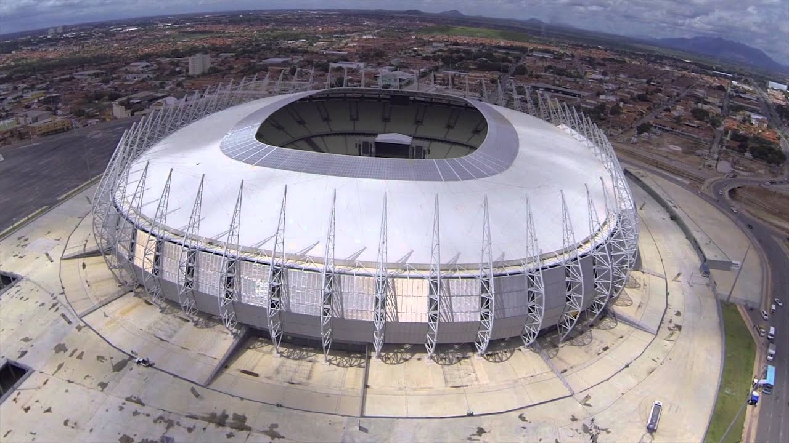

o castelão
O Estádio Governador Plácido Castelo, também conhecido como Arena Castelão, ou simplesmente Castelão,
é um estádio de futebol brasileiro localizado em Fortaleza, Ceará, e inaugurado em 1973.
Sua capacidade atual é de até 63.904 espectadores
